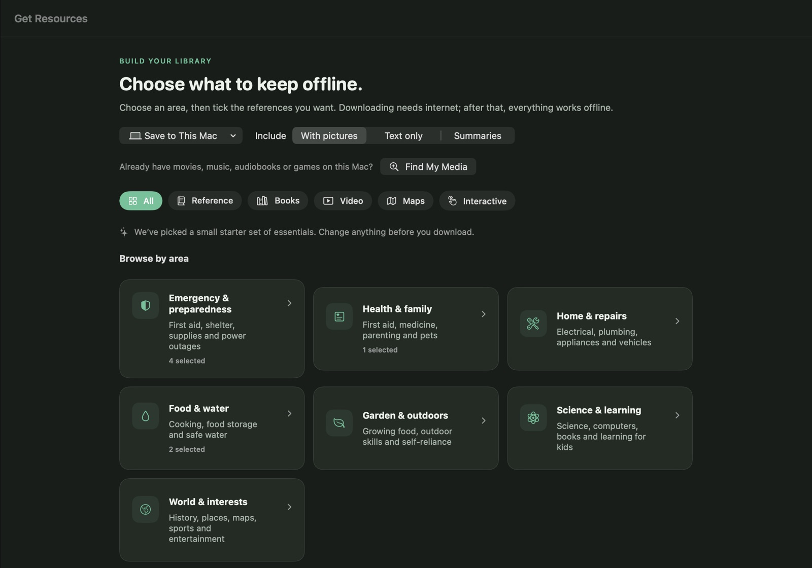
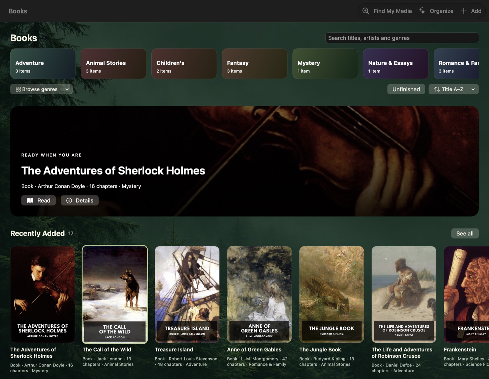

Find answers
Keep practical references, how-tos and everyday knowledge on your Mac. Ask questions and open the sources behind the answer.
Save useful knowledge, make a family plan, and keep stories close. All on your Mac.
Apple silicon · macOS 26+
Enjoy Offline Kit?
Help keep it growing.


Keep practical references, how-tos and everyday knowledge on your Mac. Ask questions and open the sources behind the answer.
Make a family plan, organize supplies, and keep important information private on your Mac.
Keep movies, music, books and games on your Mac, and share selected content over your home Wi-Fi.
Open the disk image and drag Offline Kit to Applications on your Apple silicon Mac.
Pick the references, books and other resources you want to keep. See the size before you download.
Find answers, follow your plan, and enjoy your saved content whenever you need it.
Initial downloads need internet. Your saved library works without it.
If Offline Kit helps your family, a coffee keeps it growing.

A little more everyday. A little more ready.
Read a classic. Look up a repair. Put on a familiar film. Offline Kit keeps the useful things and the good things together.

Good to know
A few practical answers, so you know what to expect.
Yes. Offline Kit is free and open source under the GNU GPL, version 3. There’s no subscription. Buying a coffee is optional support for the project.
A Mac with Apple silicon (M1 or newer) and macOS 26 or later. Apple Intelligence can provide on-device answers where it’s available. You can also download the built-in answer model from Get Resources.
Downloading the app, library resources and the optional answer model needs internet. Once saved, your content works offline. External websites and downloading updates need a connection too.
References aren’t all bundled with the app. You choose what to download and see its size first. The app includes a starter collection of classic books.
Yes. Turn on Share on Wi-Fi on the Mac, then open its local address in a browser on the same home network. No internet or phone app is needed for shared content.
The Mac must stay on, and the local Wi-Fi network must be running. Your private household plan is not shared over Wi-Fi.
Your saved content works as long as the Mac has power, including a MacBook running on its battery. Sharing to other devices also needs a powered local Wi-Fi network.
The library and on-device AI run on your Mac. Household information is encrypted locally and isn’t shared with phones over Wi-Fi. If you choose Ollama on another computer at home, the information used for that answer is sent to that computer.
Answers link to saved sources where available. Anything else is labeled “Not from the library.” AI answers can be wrong; check the source article, especially for medical, electrical or safety-related questions.
Yes. Add your own movies, music, audiobooks, EPUBs, PDFs and supported games. Most store-bought movies and books are locked to their own apps and won’t open here.
Games support Game Boy, Game Boy Color, Game Boy Advance, NES, PC Engine, DOS and ScummVM. You supply the game files.
Apple silicon · macOS 26+ · Free & open source
Release notes